Lines, bars and markers#
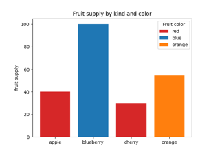
Bar color demo

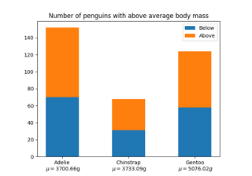
Stacked bar chart
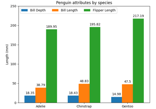
Grouped bar chart with labels

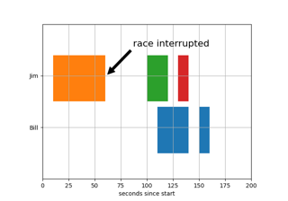
Broken Barh

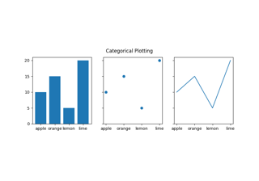
Plotting categorical variables
Plotting categorical variables
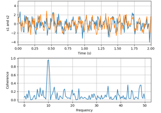
Plotting the coherence of two signals
Plotting the coherence of two signals


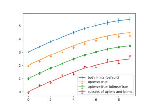
Errorbar limit selection
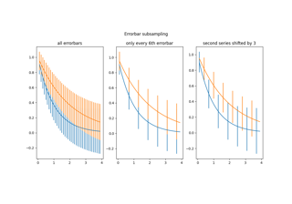
Errorbar subsampling
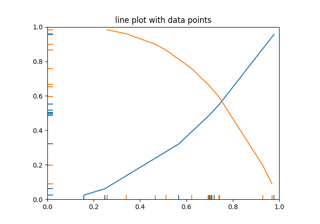
EventCollection Demo
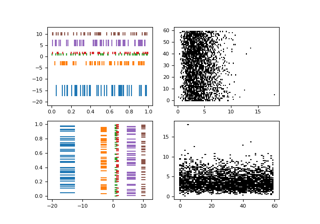
Eventplot demo
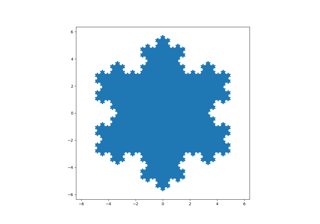
Filled polygon
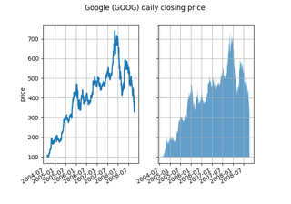
Fill Between and Alpha


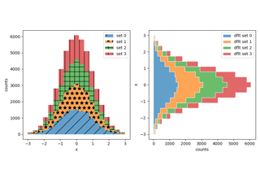
Hatch-filled histograms

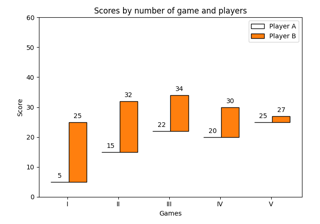
Hat graph
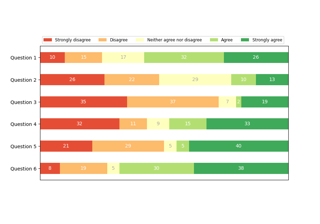
Discrete distribution as horizontal bar chart
Discrete distribution as horizontal bar chart
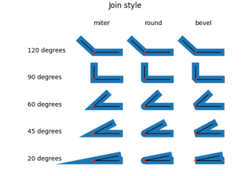
JoinStyle
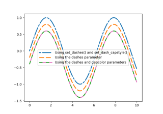
Customizing dashed line styles
Customizing dashed line styles


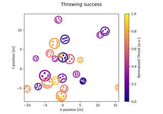
Mapping marker properties to multivariate data
Mapping marker properties to multivariate data
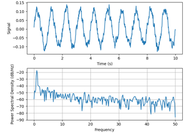
Power spectral density (PSD)
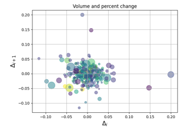
Scatter Demo2
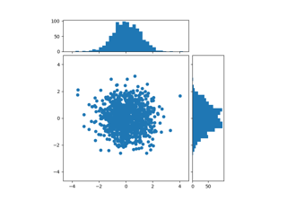
Scatter plot with histograms

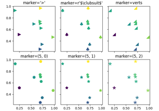
Marker examples


Shade regions defined by a logical mask using fill_between
Shade regions defined by a logical mask using fill_between


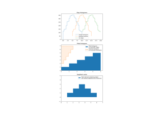
Stairs Demo